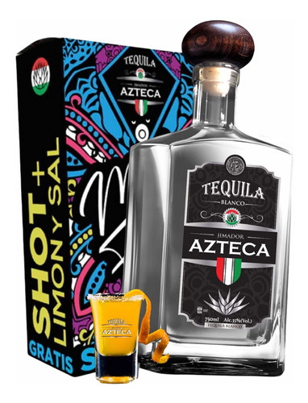
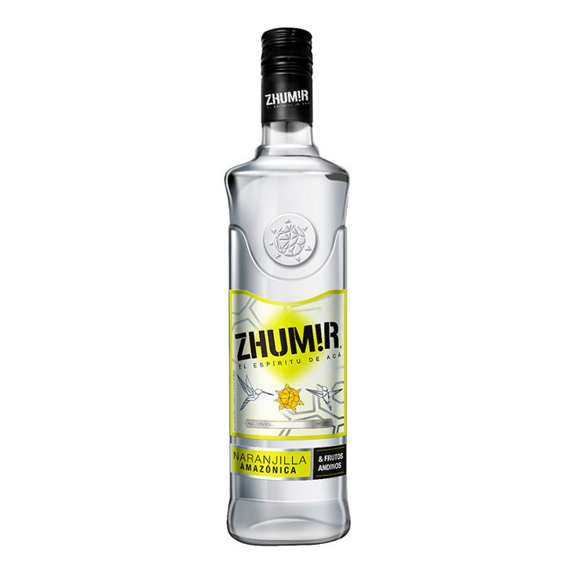
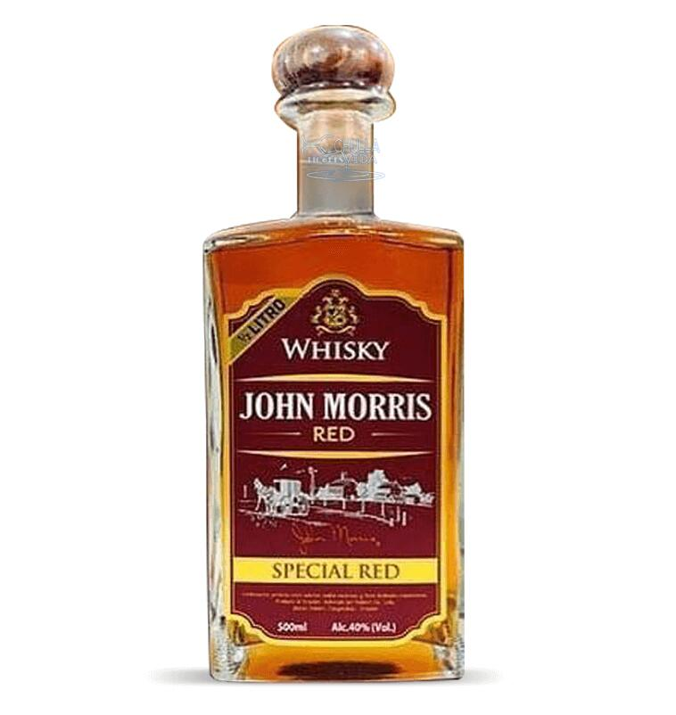
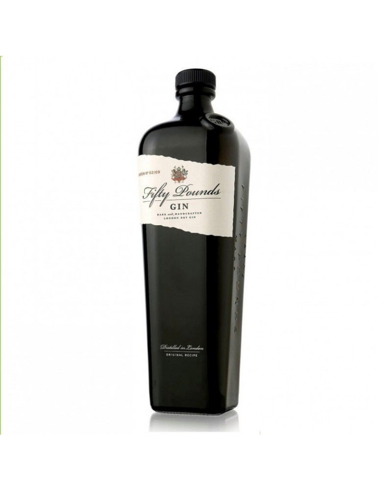
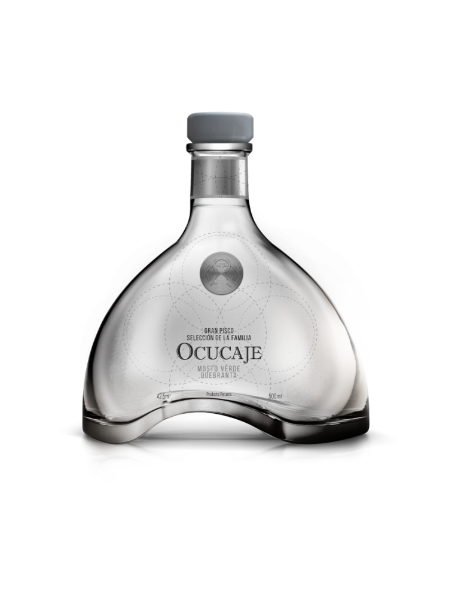
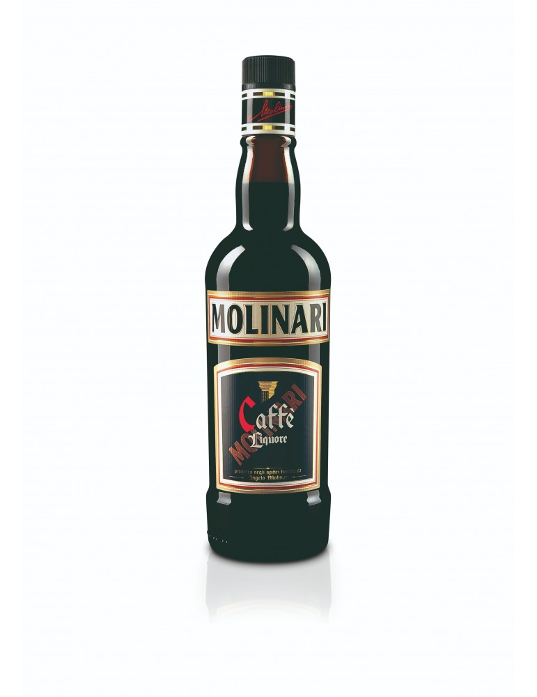
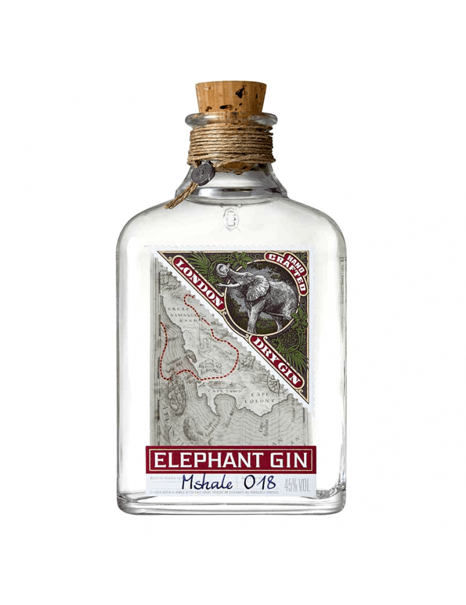
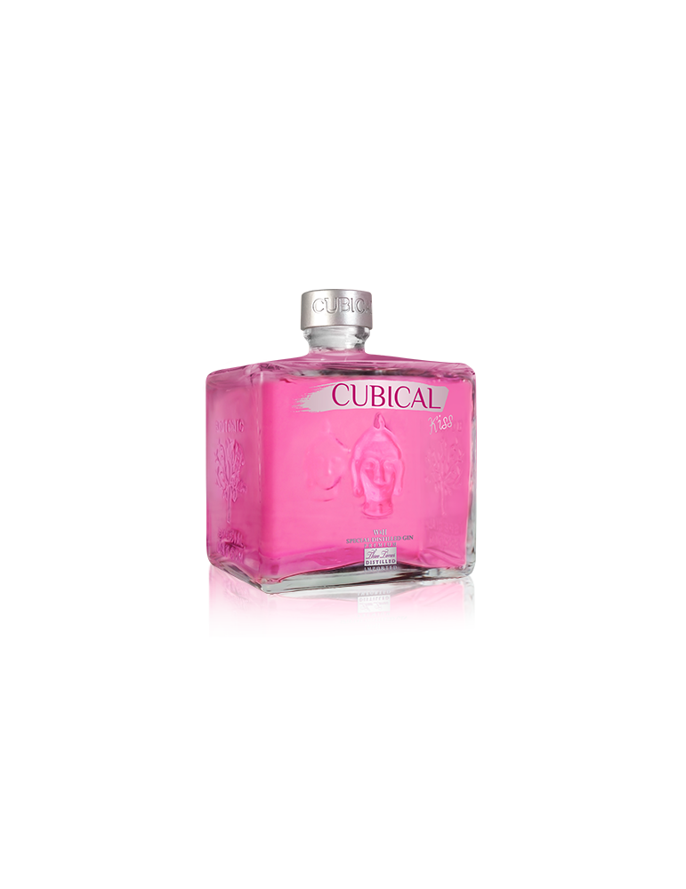
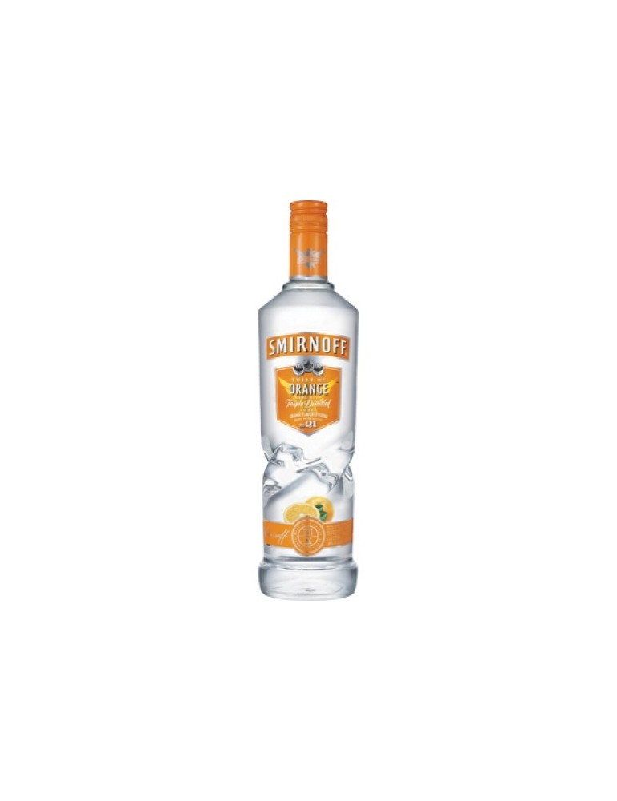

Old times negro
"Whisky old times red 745ml con 40° de alcohol. Es un excelente trago obtenido por destilación de malta de cereales, añejado en barriles de roble blanco.
Precio:21$

Tequila Azteca
El tequila tiene 38% de alcohol esta compuesto por, nueces tostadas destacando notas de roble, en paladar destaca un trasfondo de manzana, caramelo, miel agave y especias, su final es prolongado.
Precio:18.50$

Zhumir de Naranjilla
Se elabora con aguardiente, canela, naranjilla (una tarta de naranja), agua y azúcar. Tiene un 15% de porcentaje de alchol
Precio:10,50$

Wisky Jonh Marris Red
Presentación de 750ml. Es perfecto para disfrutar en toda ocasión. Su porcertaje de alcohol es de 40%
Precio:15,50$

Fifty Pounds Gin
El grado de alcohol es 43,5% sus componentes son semillas de Cilantro de Oriente Medio; Grano del Paraíso del Golfo de Guinea; Piel de Limón y Naranja de España.
Precio: 35$

Pisco Selección Familia Quebranta 500ml
Contiene el 42.5%
Precio:39$

Molinari Sambuca Caffe 700ml
Tiene 36% de Alcohol
Precio: 39$

Elephant London Dry Gin 500 Ml
Tiene el 45% de Alcohol
Precio: 60$

Gin Cubical Kiss 700ml
Bayas de enebro, semillas de cilantro, raíz de angélica, cáscara de naranja, cáscara de limón, raíz de lirio, raíz de regaliz, cassia, cáscara de almendra, naranja dulce y mano de Buda) con varios frutos del bosque como fresas, frambuesas, contiene 37% de alcohol
Precio: 42$

Smirnoff Orange Twist 750ml
Contiene 40% de alcohol
Precio:21$

Alto las Hormigas Malbec Paraje Altamira 750ml
Tiene 15% de alcohol
Precio: 67$